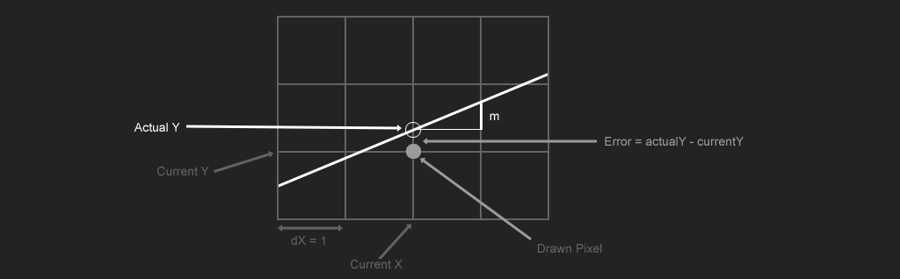

Error Based Line Drawing
The error based algorithm we will discuss on this page is an implementation of Bresenham's line algorithm. There are different implementations of this algorithm, i chose this one because it will work as a good base for anti aliased lines later.
To explore this concept, let's consider a line in octant 0, where \( 0 <= m <= 1\). Because the line is descending to the right and down, once a pixel is drawn, the next pixel will either go on it's right or on it's right and down one.
The idea behind error based drawing algorithms is to measure the distance each pixel that is considered is from the line, then pick the one that is closest. In the example above, the error is smallest if we step in both direction.
Some implementations measure this error for each pixel, but a faster solution is to accumulate it. We know what the error of the current pixel is. The line will always make one step on it's major axis, we need to figure out how much error for the minor axis accumulates for each step of the major axis. Since the size of a pixel is 1, and we assume that a pixel is centered, the valid range for this error is [-0.5, 0.5]. If the error goes below or above that threshold, we need to step one pixel on the minor axis.
This algorithm can be tought of as a DDA algorithm as well. Instead of accumulating one or more of the lines coordinates, we're accumulating an error term.
When the primary axis is the x axis, the error increment is the slope of the line \(\Delta error = \frac{\Delta Y}{\Delta X}\). If the primary axis is the y axis, the error to increment is the inverse (flip the numerator and denominator) \(\Delta error = \frac{\Delta X}{\Delta Y}\). The image below shows the delta error when the primary axis is the x axis.
Instead of accumulating \(m\), which could be negative, we will accumulate \(|m|\) and only check if \(|m| >= 0.5\). When the error exceeds 0.5, subtract 1 from it, to set the error back to the bottom of it's range.
void Line(Image& image, int x0, int y0, int x1, int y1, Color& val) {
float abs_m = (x0 == x1) ? 0.0f : fabsf(float(y1 - y0) / float(x1 - x0));
int xStep = x0 < x1 ? 1 : -1;
int yStep = y0 < y1 ? 1 : -1;
float error = 0.0f;
float y = float(y0);
for (int x = x0; x != x1 + xStep; x += xStep) {
PutPixel(image, x, int(y + 0.5f), val);
error += abs_m;
if (error >= 0.5f) {
y += float(yStep);
error -= 1.0f;
}
}
}
The above implementation isn't robust. It does not handle steep lines where \(|\Delta Y| > |\Delta X|\). To handle the case, the y axis becomes the major axis and the error that is accumulated is \(|\frac{\Delta X}{\Delta Y}|\) instead of \(|\frac{\Delta Y}{\Delta X}|\). If error >= 0.5 the x coordinate is adjusted instead of the y coordinate.
void Line(Image& image, int x0, int y0, int x1, int y1, Color& val) {
float abs_m = (x0 == x1) ? 0.0f : fabsf(float(y1 - y0) / float(x1 - x0));
float abs_cx = (y0 == y1) ? 0.0f : fabsf(float(x1 - x0) / float(y1 - y0));
int xStep = x0 < x1 ? 1 : -1;
int yStep = y0 < y1 ? 1 : -1;
float error = 0.0f;
if (abs(x1 - x0) > abs(y1 - y0)) {
float y = float(y0);
for (int x = x0; x != x1 + xStep; x += xStep) {
PutPixel(image, x, int(y + 0.5f), val);
error += abs_m;
if (error >= 0.5f) {
y += float(yStep);
error -= 1.0f;
}
}
}
else {
float x = float(x0);
for (int y = y0; y != y1 + yStep; y += yStep) {
PutPixel(image, int(x + 0.5f), y, val);
error += abs_cx;
if (error >= 0.5f) {
x += float(xStep);
error -= 1.0f;
}
}
}
}
Like the previous section mentioned, floating point numbers could run into accumulation error. Let's convert this function to use integers only. The main bit of the algorithm that needs to be adjusted is this: error >= 0.5f, error is incremented by \(|\frac{\Delta Y}{\Delta X}|\) and 0.5 is just \(\frac{1}{2}\). To be able to ignore the fractions, we need to make sure both sides have the same denominator.
To make the denominators match we need to multiply everything by \(\frac{2}{1}\) to eliminate the 0.5, and \(|\frac{\Delta X}{1}|\) to eliminate the denominator of the error. The new comparison becomes:
$$ |\frac{\Delta Y}{\Delta X} * \frac{2}{1} * \frac{\Delta X}{1}| >= \frac{1}{2} * \frac{2}{1} * \frac{\Delta X}{1} $$
Which is
$$ |\frac{\Delta Y * 2 * \Delta X}{\Delta X * 1 * 1}| >= \frac{1 * 2 * \Delta X}{2 * 1 * 1} $$
Which simplifies to
$$ |\frac{\Delta Y * 2}{1}| >= \frac{\Delta X}{1} $$
Remember, we substituted \(|\frac{\Delta Y}{\Delta X}|\) for error, which is how much the error increments on each iteration. Therefore, without floating point numbers the amount that the error increments for each iteration is \(|\frac{\Delta Y * 2}{1}|\). If the line is steep (the y axis is the major axis), the error for each iteration is \(|\frac{\Delta X * 2}{1}|\)
void Line(Image& image, int x0, int y0, int x1, int y1, Color& val) {
int dx = abs(x1 - x0);
int dy = abs(y1 - y0);
int xStep = x0 < x1 ? 1 : -1;
int yStep = y0 < y1 ? 1 : -1;
int error = 0;
if (dx > dy) {
int m = 2 * dy;
int scale = 2 * dx;
for (int x = x0, y = y0; x != x1 + xStep; x += xStep) {
PutPixel(image, x, y, val);
error += m;
if (error >= dx) {
y += yStep;
error -= scale;
}
}
}
else {
int m = 2 * dx;
int scale = 2 * dy;
for (int y = y0, x = x0; y != y1 + yStep; y += yStep) {
PutPixel(image, x, y, val);
error += m;
if (error >= dy) {
x += xStep;
error -= scale;
}
}
}
}